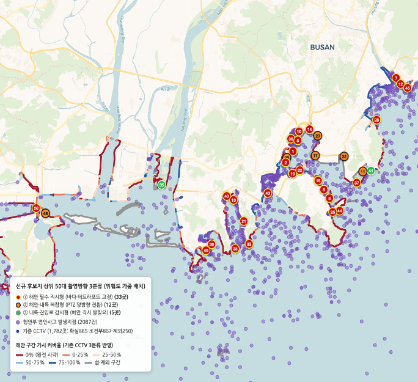

연한 회색: 단순 2D 500m 반경 기준 커버율 / 진한 주황색: 3D 지형·화각·목적 3분류 반영 실제 가시 커버율 (나머지는 미커버 사각지대)
| 해안유형 (육지 설치대상 1,464구간) | 구간 수 | 유형위험(T) | 파랑노출(W) | 평균 위험지수 | 고위험(4·5등급) 비율 | 완전 사각(0%) 비율 |
|---|---|---|---|---|---|---|
| 방파제 · 테트라포드 | 137구간 | 0.90 | 0.78 | 0.808 (최고) | 72.3% (99구간) | 24.8% (34구간) |
| 항포구 | 180구간 | 1.00 | 0.67 | 0.785 (2위) | 59.4% (107구간) | 17.8% (32구간) |
| 갯바위 | 350구간 | 0.31 | 0.78 | 0.473 | 0.0% (3등급 집중) | 50.6% (177구간) |
| 해안가 (모래·자갈 등) | 718구간 | 0.29 | 0.70 | 0.434 | 0.0% | 31.9% (229구간) |
| 미분류 (기암·암벽 등) | 79구간 | 0.47 | 0.47 | 0.445 | 30.4% (24구간) | 35.4% (28구간) |
• 정의: 육지부 설치 대상(1,464구간) 중 위험등급 4·5등급(고위험)이면서 보수적 3D 가시 커버율이 0.0%인 완전 사각지대 34구간
